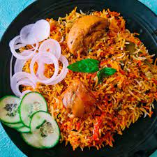

******chiken biriyani******
biriyani is a mixed rice dish originating among the Muslims of the Indian subcontinent.It is made with Indian spices, rice, and meat , and sometimes, in addition, eggs and/or vegetables such as potatoes in certain regional varieties. Biryani is popular throughout the Indian subcontinent, as well as among its diaspora. It is also prepared in other regions such as parts of Afghanistan, Iran, and Iraq.

Ingrediant :
- curd
- kosher salt
- 2 teaspon kashmiri chili powder
- 1/2 teaspoon ground turmereric
- bone-in skinless chiken thighs
- oil/ghee
- onions
- basmati rice
- whole gloves
- cardamoom
- bay leaves
- black peppercorn
- saffron
- cinnamon stick
- cumin seeds
- grated ginger,garlic
- tomatoes
- ciantro leaves
- mint leaves
Procedure :
- add ghee/oil then add cinnamon,gloves,bay leaves .
- add onion (cook until it get brown).
- add green chili then add grated ginger garlic(cook for 2 mints).
- add tomato's .
- add chili powder, coriander powder and coriander powder .
- add chiken( cook for 30 mintutes)
- add basmasti rice and cook for half an hour .
- your biriyani is ready .